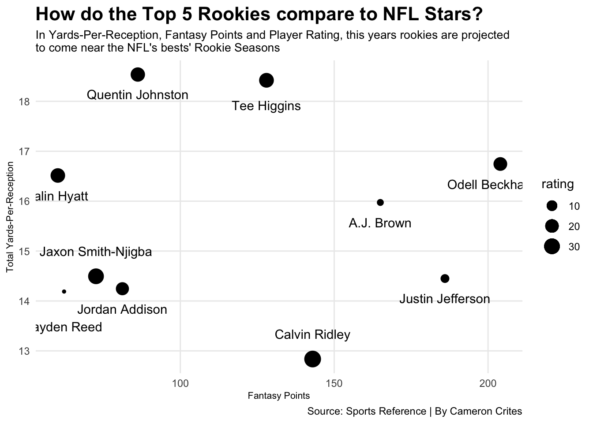

Predicting the Best Rookie Wide Receivers in the NFL this year
Author
Cameron Crites
Published
May 10, 2023
This NFL Draft, we were certainly blessed with a number of wide receivers that showcase elite potential in the NFL. From USC’s Jordan Addison to Boston College’s Zay Flowers, and everywhere in between, the first couple rounds of the draft had high-level receiving talent go to teams that will be perfect fits for their specific skill-sets.
With that being said, in the world of fantasy football, which former draft prospects will best succeed with their new teams? And how can we predict how they’ll perform?
That’s where modeling comes in to play. To predict what receivers will score the most fantasy points their rookie year, I ran a model centered around stats I felt were important and based it off how receivers in the past have performed, particularly “high-level” NFL receivers in the league today.
As for the stats I used, I utilized basic collegiate stats, such as touchdowns and yards, however, I also emphasized stats such as yards-per_reception and player rating, in order to determine the amount of fantasy points they’ll record. The results of this projection are as follows…
currentxgpredict <- xg_fit %>%predict(new_data = currentwrselected) %>%bind_cols(currentwrselected) currentxgpredict %>%top_n(5,wt=.pred) %>%select(name, nfl_team, overall, .pred) %>%arrange(desc(.pred)) %>%gt() %>%cols_label(name ="Player",nfl_team ="Team",overall ="Pick",.pred ="Projected Fant. Pts" ) %>%tab_header(title ="Who will be the Top 5 Rookie Fantasy Wide Receivers this year?",subtitle ="Jordan Addison projects to finish first amongst all rookies in Fantasy Football this year" ) %>%tab_style(style =cell_text(color ="black", weight ="bold", align ="left"),locations =cells_title("title") ) %>%tab_style(style =cell_text(color ="black", align ="left"),locations =cells_title("subtitle") ) %>%tab_source_note(source_note =md("**By:** Cameron Crites | **Source:** Sports Reference") )
Who will be the Top 5 Rookie Fantasy Wide Receivers this year?
Jordan Addison projects to finish first amongst all rookies in Fantasy Football this year
Player
Team
Pick
Projected Fant. Pts
Quentin Johnston
Los Angeles
21
86.18442
Jordan Addison
Minnesota
23
81.17528
Jaxon Smith-Njigba
Seattle
20
72.59473
Zay Flowers
Baltimore
22
66.56978
Jayden Reed
Green Bay
50
62.22466
By: Cameron Crites | Source: Sports Reference
As you can see, Quentin Johnston is projected to have the most fantasy points this year with…86 points. Ya, that’s not great. Averaging about 5 points a game. So, what does my model think?
That’s not a lot of first round receivers that are going to make a huge difference. They won’t have the effect that first rounders in the past have had, which honestly, is not a crazy prediction. Especially when you consider that a ton of rookies don’t always produce to expectations in their first year. So overall, this prediction is bold but not unrealistic.
Now, when considering this result compared to past NFL wide receiving stars, it should be analyzed the stats their rookie years compared to the rookies this year. This next model will compare five NFL stars to the Top 5 rookies projected. It will compare their total yards-per-reception, projected fantasy points and player rating from their rookie seasons.

Based on this, it seems no rookie will come close to any of the current NFL stars in fantasy points, however, we have insight into why the model predicted what it did. Johnston was the choice to finish first in fantasy points, and as seen, that could be because of his high yards-per-reception and player rating in college, while a player like Jayden Reed didn’t have a very high rating for either of those stats.
Ultimately, only time will tell how these rookie receivers will perform, but there is no doubt that Quentin Johnston on the Chargers will be a name to watch this upcoming season.